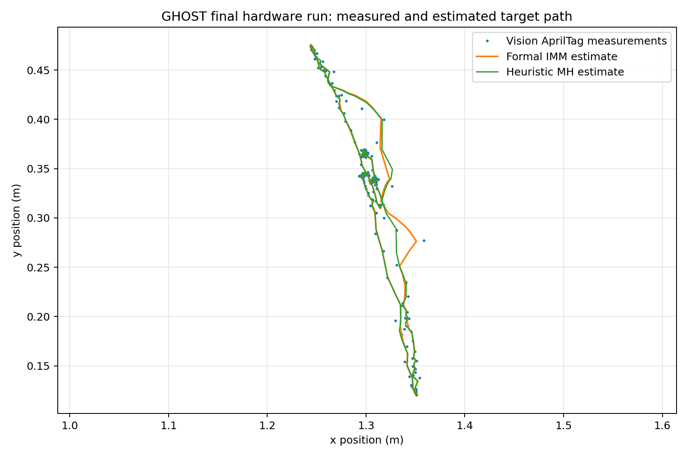
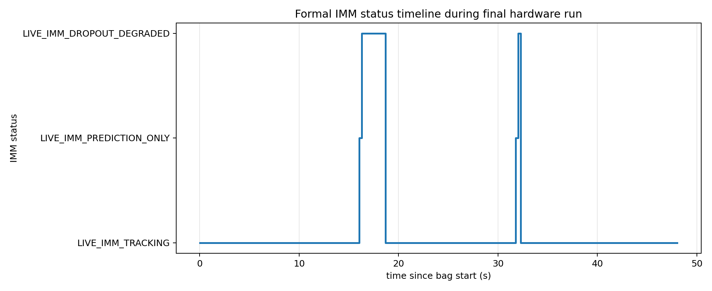

XY hardware replay
Raw AprilTag measurements and simultaneous tracker trajectories from the preserved run.
A hardware-integrated estimation project that keeps target state, covariance, measurement age, and motion-model behavior visible when camera measurements disappear.
The `live_camera_calibrated_R_01` run contains real AprilTag measurements and simultaneous formal IMM / heuristic MH telemetry.

Raw AprilTag measurements and simultaneous tracker trajectories from the preserved run.

Tracking, prediction-only, and degraded-dropout states remain explicit throughout replay.
The public demo reflects the implemented tracker pipeline, not the larger legacy or future flight architecture.
The project separates engineering completion from physical validation so the visual presentation never outruns the evidence.
AprilTag pose ingestion, formal IMM, GHOST-MH, full covariance plumbing, status telemetry, split recording, plots, and replay.
Predeclared stationary covariance and measured-grid protocols exist. Bias, RMSE, repeatability, and paired trial results await collection.
The current project demonstrates the navigation/estimation core. Closed-loop guidance, controller validation, vehicle command, and flight test are not claimed.
Recruiters can start with the replay. Estimation engineers can inspect the report, protocols, code, and evidence boundaries.